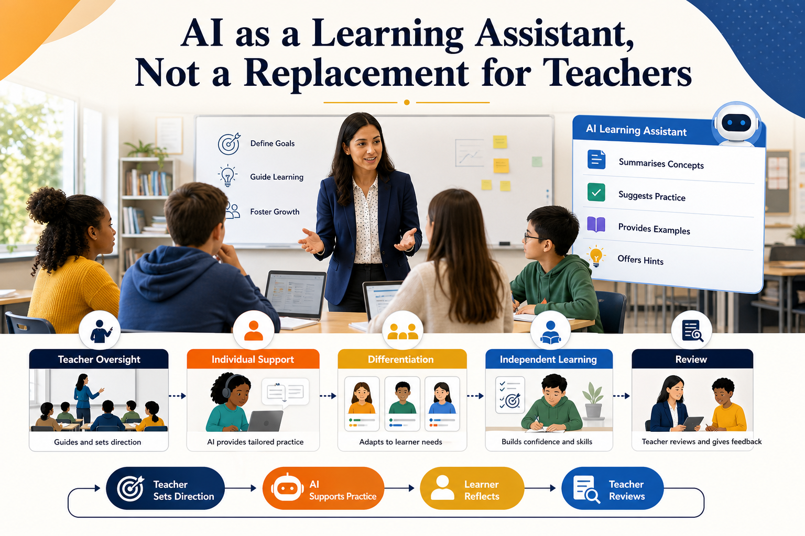

The strongest use of AI in education is not to replace teachers. It is to extend the support teachers can give.

The strongest use of AI in education is not to replace teachers. It is to extend the support teachers can give.
A teacher understands the learner, the group, the curriculum, the assessment standard and the emotional climate in the room. AI does not.
That difference matters.
AI is becoming part of everyday learning. Learners can ask for explanations, examples, summaries, quizzes and feedback at any time. This creates opportunity, but it also creates responsibility.
If AI is treated as a substitute for teaching, education becomes weaker. If it is treated as a learning assistant under teacher oversight, it can strengthen individual support, differentiation and independent learning.
The goal should be better learning, not less teaching.
AI can be a powerful learning assistant, but it should never replace the professional role of teachers.
Teachers are already managing mixed abilities, different confidence levels, language needs, assessment pressure and increasing administrative workload.
AI can help by producing alternative explanations, practice questions, revision prompts, examples and learning activities. It can help learners revisit content at their own pace and ask questions they may feel embarrassed to ask in class.
However, AI does not know whether a learner is anxious, disengaged, masking confusion or relying too heavily on generated answers. That is why teacher oversight remains essential.
The main challenge is drawing the line between support and dependency.
A learner who uses AI to explain a topic in simpler language may be developing independence. A learner who uses AI to complete tasks without understanding may be losing the purpose of learning.
Teachers need to help learners understand how to use AI as a thinking partner, not as a replacement for effort, reflection or evidence of competence.
This challenge happens because AI tools are easy to access but not always easy to use well.
Learners may receive little guidance on prompting, checking accuracy or recognising when an answer is weak. Staff may be asked to respond to AI quickly without enough training or policy clarity.
When expectations are unclear, AI use becomes inconsistent. Some learners benefit. Others become over-reliant.
These examples show how the idea can be applied in everyday education, training and learner support practice.
A learner asks AI to explain a maths method using a different example. The teacher checks the explanation and asks the learner to solve a new problem independently.
A teacher uses AI to create three reading levels of the same topic, then checks vocabulary, accuracy and curriculum fit before using them.
A learner uses AI to generate revision questions, answers them without assistance and then reviews gaps with the teacher.
A class uses AI for brainstorming, but the teacher sets the criteria, challenges weak ideas and connects the work to assessment standards.
If AI is used without teacher oversight, learners may receive inaccurate information, shallow explanations or answers that look confident but are wrong.
There is also a risk that learners stop practising the difficult parts of learning: planning, drafting, remembering, explaining, questioning and improving.
Replacing teachers with tools would reduce education to content delivery. Teaching is far more than content delivery.
Barriers can remain hidden, support can become inconsistent, and confidence can be damaged.
Quality, inclusion, safeguarding and assessment integrity can suffer when AI use is unmanaged.
A better approach is to define AI as a supervised learning assistant.
Teachers should decide when AI is useful, what tasks it can support, what outputs must be checked and how learners should show their own understanding.
Organisations should provide staff training, learner guidance and clear policy so AI supports learning rather than weakening it.
receive extra explanation, practice and confidence between lessons.
gain support for differentiation and resource creation while retaining professional control.
can improve consistency by setting clear expectations for responsible AI use.
can protect authenticity by requiring explanation, application and reflection.
The leadership issue is not whether AI will enter learning. It already has.
The strategic question is whether organisations will shape AI use through professional standards, or leave learners and staff to work it out alone.
AI can be a powerful learning assistant, but it should never replace the professional role of teachers.
The best model is teacher-led, learner-centred and quality-assured.
How can we help learners use AI to think more deeply rather than avoid thinking altogether?
This article has been written as professional guidance, with factual claims checked against recognised education, accessibility and health-information sources.